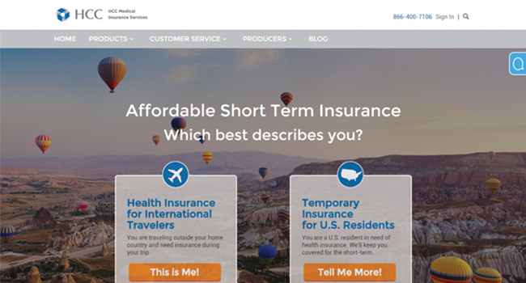
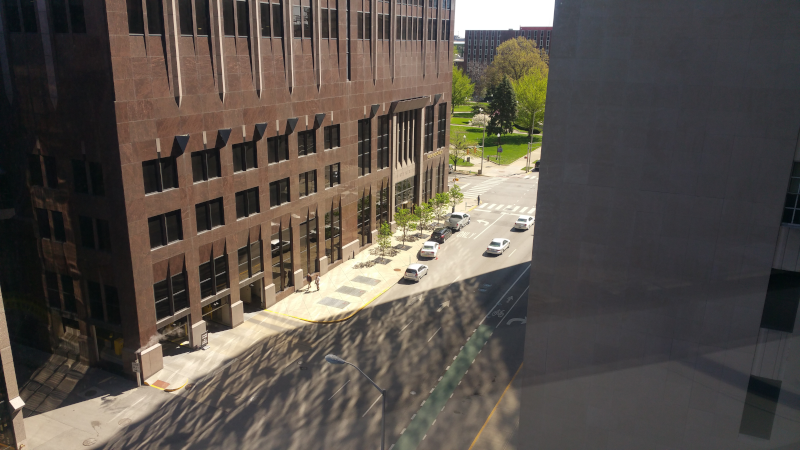
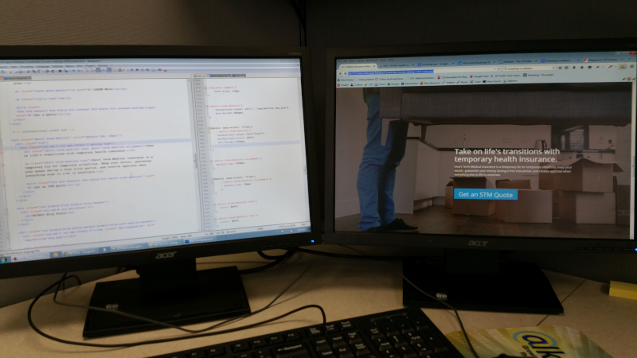
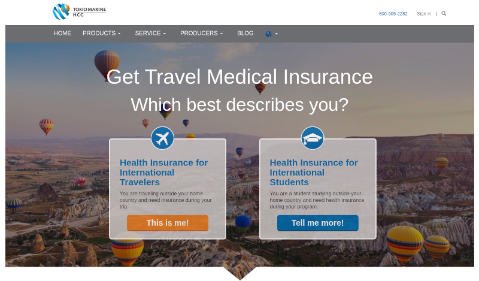

Responsive Website Redesign
2015-04-01
 One of the responsive pages I built
Situation
HCCMIS needed to make their website responsive to serve customers using mobile devices.
The company offers medical travel insurance to customers through their website.
They were established in 1998 in Indianapolis, IN.
Note: In June 2015, HCCMIS was acquired by Tokio Marine Holdings Inc.
Challenge

Their main website was hosted on the PHP-based Cacade CMS server.
The company used this project as a opportunity to redesign their website. All the responsive web pages needed to be converted to PHP before they would work properly on the server.
Action

Amy, the Graphic Designer, used Photoshop to create mockups of what each web page should look like.
I was hired as the UI Developer to translate the Photoshop mockup into responsive page templates.
I asked Amy to define the height and width of the Photoshop components in pixels. Then I used the Notepad++ text editor to write the required HTML and CSS Bootstrap code. Sometimes I used Photoshop for image resizing.
I wrote a style guide for the project to ensure UI consistency. Making sure the templates met company design and coding standards.
I tested my work in multiple browsers before committing code to the internal repository.
Result
 After I left someone messed up the centering of the circle icons
We successfully completed the project on time. The department manager Nick said he was happy with our work.
This was only a short-term contract role. During this time HCCMIS was acquired by another company, Tokio Marine Holdings Inc.
None of the staff was made aware of this until August of 2015. I was informed that due to the merger, HCCMIS was placed under a hiring freeze.
This meant they couldn't extend my contract again or hire me as a full-time employee. So, before my contract ended I looked for other opportunities.